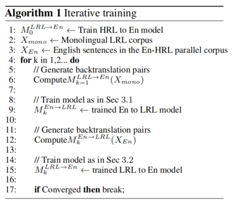
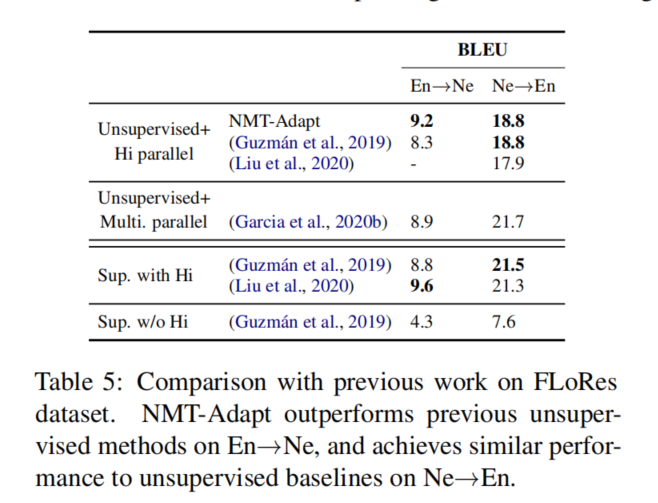

平行语料库是两种语言之间翻译文本的结构化集合。这种平行文本语料库是训练机器翻译算法的基础。
Abstract
平行数据的缺乏对于训练高质量机器翻译系统为低资源语言翻译来说是一个主要障碍。幸运的是，一些低资源语言在语言学上是与高资源语言相关或者相似的，这些相关的语言或许共享一些语法或者句法结构。在本文工作中，除了相关高资源语言的平行数据，我们还利用这些语言学上的重叠，来促进从低资源或者到只有单语言数据的低资源语言的翻译。我们的方法——NMT-Adapt，结合了去噪自动编码、回译和对抗性目标相结合，利用单语数据进行低资源适应。我们对从三个语系种的7种语言进行了实验，结果显示，与其他翻译相比，我们的技术极大地改善了向低资源语言的翻译。
Introduction
尽管机器翻译（Machine Translation，MT）由于深度神经机器翻译（Neural Machine Translation, NMT）模型的出现而取得了很大的进步，但是这种进步已经被证明是主要在资源充足的带有大量可用平行训练数据的语言中。
然而随着网络通信的进步和社交媒体的兴起，全世界的个人开始用他们母语的低资源语言开始交流和产生内容。其中一些低资源语言和高资源语言密切相关。其中一个例子就是方言：传统上认为方言是语言的口语变体而不是书面变体。由于这种非标准化口语表达和方言变体中大量俚语的流行，方言的翻译对于使用在语言正式变体（通常高资源语言的变体被认为是标准化形式）上训练的模型是一个挑战，同样地，使用与高资源语言相关模型翻译低资源语言时（使用西班牙MT模型翻译Catalan加泰罗尼亚语）也会出现相似的问题。
虽然更好地翻译低资源相关语言的一个直观方法可能是获得高质量的平行数据。这种方法通常是不可行的因为缺少专业知识或者双语翻译。低资源语言质量控制中出现的问题进一步加剧了这个问题。这种缺乏激励着我们学习低资源语言的机器翻译模型，同时利用现有可用数据例如密切相关语言的平行数据或者低资源语言的单语数据。
我们已经研究了在几乎没有可用的平行数据时使用单语数据进行机器翻译的应用。一些方法涉及到使用回译从单语数据中合成更多的平行数据或者从大型多语全集中挖掘平行数据。我们介绍NMT-Adapt，一种零资源技术，在低资源语言上不需要使用任何类型的平行数据
我们研究了NMT-Adapt在为每种低资源语言的两个方向：（1）低资源语言到英语 （2）英语到低资源语言 翻译时的性能。我们认为翻译成英语可以表述为一种典型的无监督领域自适应任务，高资源语言是source domain，与之相关的低资源语言是target domain。我们证明了对抗领域自适应可以应用于这一相关语言翻译任务。对于第二个情况，翻译成低资源语言，这个任务更具挑战性，因为他涉及生成的输出对一个新领域的无监督自适应。为了完成这个任务，NMT-Adapt联合优化了四个任务来执行低资源翻译：（1）去噪自动编码（2）对抗性训练（3）高资源翻译（4）低资源回译
我们测试了我们提出的方法，并证明了其在改善下列三个不同语系的低资源语言翻译方面是有效的：（1）伊比利亚语言（2）印度语言（3）犹太语，特别是阿拉伯方言。我们的代码和资源是开源可用的。
Related Work
零次翻译（zero-shot translation） 我们的工作与zero-shot翻译密切相关。然而，虽然zero-shot翻译在没有平行数据的语言对之间进行翻译，但有一个假设，目标语言对中的两种语言与其他语言都有一些平行数据。因此，系统可以学习处理这两种语言。在一项研究中，Currey和Heafield使用在pivot language上的单语数据改善了zero-shot翻译。然而，在我们的场景中，在低资源语言和任何其他语言之间没有平行数据。其他工作中，Arivazhagan等人，证明了对编码输出增加对抗训练可以帮助zero shot 训练，我们在我们的多任务训练种采用了一个相似的理念，以确保我们低资源目标语言与高资源语言处在相同的隐空间。
枢轴语言（Pivot Language）
如果希望获得中文到法语的翻译模型，但是中文到法语的平行语料较少，中文到英文、英文到法语的平行语料比较多，可以利用英文作为“枢轴语言”，在中文和法语之间作为桥接，训练中英、英法两个翻译模型，最终完成中翻法的任务。
无监督翻译（Unsupervised translation） 一系列相关的工作是无监督翻译技术；这些方法在没有任何平行语料库的语言之间进行翻译。在Artetxe等人的工作中，无监督翻译通过同时训练去噪自动编码和回译任务来实现。在这些方法中，提出了多种预训练方法来更好地初始化模型。
提出了不同的方法，他们使用X-Y之间的平行数据来提高X-Z的无监督翻译。这个场景与我们的设置不同，因为它并没有假设Y和Z是相似语言。这些方法在多语言NMT模型上利用cross-translation方法，其中对于平行数据对$(S_x,S_y)$ ，他们使用当前模型将$S_x$ 翻译成语言Z来获得$S_z’$ 。然后使用$(S_y, S_z’)$ 作为额外合成的数据对来进一步提高这个模型。Garcia等人在低资源语言上使用多语言交叉翻译实验获得了一定的成功。虽然这些方法将平行数据作为辅助数据，来补充无监督NMT，我们的工作从领域自适用方面看待这个问题。我们尝试使用Z的单语数据在X-Y上训练的监督模型泛化到Z。
利用高资源语言来提高低资源翻译 有几项工作利用高资源语言的数据来改善相似低资源语言的翻译。Neubig 和Hu证明将低资源语言有限的平行数据对和高资源语言数据混合是有益的。Lakew等人提出在低资源语言模型中选择困惑度低的高资源语言数据。Xia等人以高资源语言为轴心，通过无监督机器翻译创建了合成句子对。然而，这些之前的方法强调从低资源语言到英语的翻译，但是反方向或者没有考虑，或者表现很差。Siddhant等人同时训练了多语言翻译和去噪，结果表明这个模型可以不适用平行数据就将语言翻译成英语，其表现接近于有监督多语言NMT。
相似语言翻译 与我们的工作类似，已经有一些方法提出使用相似语言来改善翻译，Hassan等人从英语主要语料库生成合成英语方言平行数据。但是，这种方法假设在诸语言语料库中的词汇可以逐字映射到方言词汇中，并且他们用局部投影计算相应的替换词，这种方法与我们的工作不同，它依赖于方言/相似语言的种子双语词典的存在。此外，这种方法只考虑从方言到英语的翻译而没有考虑从英语到方言的翻译。其他的工作训练了一个大规模多语言多对多模型，证明了高资源训练数据改善了相关的低资源语言翻译。在其他工作中，Lakew等人比较了对不同语言变体翻译建模（模型翻译？ model translation）的不同方法，在两种变体的平行数据都可用的情况下，一些语言对的变体可能没有标记。另一项工作重点在相似语言之间的翻译，在其中一个研究中，Pourdamghani和Knight学习了一个基于字符的密码模型。在其他工作中，Wan等人通过在执行层协调的同时，分离token embeddings到枢轴和私有部分，改善了主要语言和方言之间的无监督翻译
3 Method
我们描述了NMT-Adapt方法，即在不使用任何低资源语言平行数据的情况下，翻译一种低资源语言到英语或者从英语到低资源语言。在3.1节中，我们描述NMT-Adapt如何利用一种新的多任务领域自适应方法来将英语翻译成低资源语言。在3.2节中，我们描述了我们如何实施资源域自适应来将低资源语言翻译成英语。最后，在3.3节中，我们证明了我们如何利用这两种领域自适应方法来执行迭代回译——更进一步在两个方向改善翻译质量
3.1 English to Low-resource
为了将英语翻译成低资源语言，NMT-Adapt 使用预训练的mBART模型初始化，该模型的预训练见（Liu 2020）。正如在图一中展示的那样，我们继续使用受Lample 2018启发的四个任务同时训练这个模型，并且使用来自不同任务的梯度的加权和更新模型。
语言标识token被放置在与mBART中相同的位置。对于编码器，不管高资源和低资源语言源文本，有无噪声，在预训练的mBART中都使用高资源语言（HRL）的语言token。对于解码器，相关高资源和低资源语言使用它们自己的、不同的语言token。我们使用来自高资源语言的token embedding初始化低资源语言的token embedding。
Task 1： Translation 第一个任务使将英语翻译成高资源语言（HRL），该语言使用现成的高资源平行数据进行训练。这项任务的目标是将高资源翻译知识转换成低资源语言来帮助翻译。我们使用交叉熵损失公式如下：
，其中$Z{E n} = \mathcal{E}(X{E n},[En]). (X{E n}, X{H R L})$ 是平行句子对，$\mathcal{E},\mathcal{D}$ 标识以（input，language，token）为参数的编码、解码器。$\mathcal{L}_{C E}$ 表示交叉熵损失cross entropy loss
Task2: Denoising Autoencoding 对于这项任务，利用单语言文本，我们向每个句子中引入噪声，将噪声句子输入到编码器并训练模型来生成原始句子。我们使用的噪声与Lample 等人2018a的相似，它包括单词的shuffle 和 mask。shuffle是单词的随机排列，其中单词的位置必须移动最多三个单词。每个单词都以0.1的均匀概率被mask。这项任务的目标是学习语言的特征空间，因此编码器和解码器可以在特征和句子之间转换。这对于还没有在mBART预训练的低资源语言来说尤其必要。增加噪声在Lample等人在2018a的研究中被证明对于翻译的表现至关重要，因为它迫使学习的特征空间更加鲁棒并且包含高级语义知识。
我们在低资源语言和相关高资源语言上训练去噪自动编码并且计算loss如下：
其中，$Z{i} = \mathcal{E}(\mathcal{N}(X{i}),[HRL])$ ，$X_{i}$ 来自单语语料库，$\mathcal{N}(X_i): X_i with noise$
Task 3： Backtranslation 对于这项工作，我们在英语到低资源语言的回译数据上训练，这项任务的目标是捕获在低资源语言中的语言建模效果。我们在3.3节描述了我们如何使用高资源翻译模型来引导回译来获得这些数据。
使用的目标如下：
其中，$Z{En}’ = \mathcal{E}(Y{En},[En])$ 。$(Y{En},X{LRL})$ 是英语到低资源语言回译对。
Task 4： Adversarial Training 最后一项工作的目标是 使编码器输出与语言无关的特征，这种表示方法与含噪音的高低资源语言以及英语无关。理想情况下，编码器输出应该包含句子的语义信息，几乎没有语言特定的信息。这样，从英语到高资源语言平行数据学习的任何知识都可以直接应用于生成低资源语言，只需在推理过程中切换语言token，而不需要捕获虚假相关性。
为了在三种语言中对抗性混合编码器的隐空间，我们使用两个critics（discriminators，判别器？critic是策略优化方法），critic是循环网络，来确保他们可以处理变长文本输入，与Gu等人2019年的研究相似，使用Wasserstein损失对对抗部分进行训练，这是两种类型数据之间的期望差异。这种损失使不同语言分布之间的EMD距离（Earth Mover’s Distance）最小，我们计算损失函数如下：
如等式4所示，第一个critic被训练来区分高资源和低资源语言，同样地，在等式5中，第二个critic被训练来区分英语和非英语（包括高资源和低资源语言）
Fine-tuning with Backtranslation（使用回译进行微调）: 最后，我们发现使用这四个任务同时训练后，在推理前单独地使用回译进行一次微调是有益的。我们认为这是因为尽管对抗性训练减少了相关性，但他们并没有被完全消除，仅使用语言token控制输出语言是不够的。通过对回译进行微调，我们进一步适应目标端，并鼓励解码器的输出概率分布更好地匹配所需输出语言。
3.2 Low-resource to English
我们提出从低资源语言到英语翻译建模作为一项领域自适应任务，并根据领域对抗神经网络（DANN）（Ganin 2017）的见解设计我们的模型，DANN是一项在很多NLP中广泛使用的领域自适应技术。这次，我们同时训练三个任务：
Task 1：Translation 我们在平行数据上训练高资源语言到英语翻译，目标是使这些知识能够翻译低资源语言的句子。我们如下计算loss：
其中，$Z{HRL} = \mathcal{E}(X{HRL},[HRL])$
Task 2: Backtranslation 我们在3.3节中描述低资源语言到英语回译，目标如下：
其中，$Z’{LRL} = \mathcal{E}(Y{LRL},[HRL])$
Task 3: Adversarial Training 我们将高和低资源语言语料库的单语语料库的句子输入到编码器中，训练编码器输出，使其输入语言无法被critic区分。目标是将低资源语言编码到与高资源语言共享的空间中，以便在翻译中训练的编码可以直接使用。输入中没有噪声，因为我们没有观察到改善。仅有一个循环critic使用了Wasserstein损失，计算如下：
其中，$Z{LRL} = \mathcal{E}(X{LRL},[HRL])$
与从英语翻译到低资源语言相似，我们使用预训练的mBART初始化NMT-Adapt，在编码器中对高资源语言和低资源语言使用相同的语言token
3.3 Iterative Training
我们描述如何交替训练En-LRL，LRL-En模型，来创建能提高整体质量的更好的回译数据。

Algorithm1描述了迭代训练过程，我们首先通过在高资源语言到英语翻译的平行数据上对mBART模型进行微调来创建英语到低资源语言回译数据。使用这个模型，我们将低资源语言句子视为高资源语言，将单一低资源语言文本翻译成英语。使用结果数据对作为回译数据来训练我们将英语翻译成低资源语言模型的第一次迭代过程。
在将英语训练成低资源语言后，我们使用这个模型来将English-HRL 平行数据中的英语句子翻译成低资源语言，使用那些句子对作为回译数据来训练低资源到英语翻译模型的第一次迭代。
然后我们使用第一个低资源语言到英语翻译模型来为第二个英语到低资源翻译模型生成回译数据对。我们迭代地重复这个使用模型中一个方向来训练另一个方向的过程
4 Experiments
4.1 Datasets
我们在三组语言上做了实验，每一组里，我们为一种语言（高资源语言）准备了大量的平行训练数据，而相关语言则没有平行数据，以此来模拟低资源语言场景。
我们的三个分组包括：(i) Iberian 伊比利亚语 ，我们将Spanish视为高资源语言，将Portuguese和Catalan视为低资源语言；（ii）Indic language （印度-雅利安语支？）我们将Hindi视为高资源语言，Marathi，Nepali和Urdu视为低资源语言；（iii）Arabic （阿拉伯语），我们将现代标准阿拉伯语（Modern standard Arabic，MAC）视为高资源语言，Egyptian、Levantine Arabic dialects 视为低资源语言。这些语言中，Urdu和Hindi之间的关系一个特殊的设置；虽然这两种语言作为口语可以相互理解，但他们使用不同的文字书写。除此之外，在我们的实验环境中，所有低资源语言，除了Nepali，都不包含在最初的mBART预训练中。
表1展示了每种语言的平行语料库。由于缺乏一些低资源语言的平行数据，我们无法匹配训练和测试域。对单语数据，对于每种语言，我们从CC-100语料库中随机取样1M句子。为了控制质量，如果句子中超过40%的字符不属于该语言的字符集，我们就会过滤掉该句子。处于质量和内存限制，我们只是用长度在30-200个字符之间的句子。
Collecting Dialectical Arabic Data 虽然获取低资源单语数据相对简单（因为即使是低资源文本语言标识符也通常容易获得），但辨识方言数据通常并不简单。这是因为许多方言传统上被认为是口头的而不是书面的，通常缺少标准拼写、重要的俚语，甚至缺少与主要语言的相互理解。一般来说，在语言分类器中方言数据通常被分到和主语言一组。
我们描述了我们得到可靠的Arabic方言单语数据采取的步骤。由于CC-100语料库不能区分MSA和他的方言变种，因此我们训练了一个更细粒度的分类器，用于区分MSA和特定口语方言。我们的分类器基于为Arabic预训练的BERT模型并针对六种分类对他做了微调：（i）Egyptian （ii）Levantine，（iii）Gulf，（iv）Maghrebi，（v）Iraqi 方言以及（vi）书面MSA。我们使用Bouamor和Zaidan的数据作为训练数据，得到的分类器在保留集上准确率达到了91%。我们使用训练好的Arabic方言分类器进一步分类CC-100的Arabic单语数据，挑选MSA，Levantine和Egyptian句子作为我们实验中Arabic的单语数据。
4.2 Training Details
我们为critics使用学习率为0.01的RMSprop优化器，为剩余模型使用Adam优化器。我们使用8个GPU，每个GPU的batch size为1024个token训练我们的模型。对于对抗训练，生成器每三次更新训练一次，critic每次更新训练一次。
（i）翻译，（ii）回译，（iii）LRL和HRL去噪（只针对En—->LRL方向）的每次任务，都有同样的样例数，并且他们的交叉熵损失有相同的权重。adversarial loss 对抗性损失 $\mathcal{L}_{adv}$ 在critic上有相同的权重，而对生成器（编码器）有-60的乘数。这个乘数经过微调来保证收敛，并且是负的因为他与鉴别器损失相反。
对于第一次迭代，从英语到低资源语言我们训练了128个 epochs，从低资源语言到英语我们训练了64次。第二次迭代，我们对两个方向都训练了55个epochs。我们所有其他的设置和训练参数都遵循（Liu等人2020的研究）。
critics由四层组成：第三层是一个双向GRU并且剩余三层是全连接层。隐藏层大小是512，512和128，并且使用SELU激活函数。
我们在8个GPU上做了实验，每次迭代花费将近三天的时间，我们使用公开可用的mBART-checkpoints初始化。我们方法的GPU内存使用只比mBART稍微大了一点。虽然我们将额外的参数引入到鉴别器中，但这些额外的参数与mBART大小相比是微不足道的。
4.3 Result
我们展示在低资源语言翻译上应用NMT-Adapt的结果
4.3.1 English to Low-Resource
我们首先评估翻译成低资源语言的表现，我们将NMT-Adapt的第一次迭代与下面几种baseline系统作比较（i）En —->HRL Model：直接使用为En —- > HRL翻译训练的模型。（ii）adversarial（对照组？）：没有使用回译以及没有最终微调的版本。（iii）回译：在使用HRL—->En翻译模型生成的回译数据上的mBART微调。（iv）BT+Adv：没有最终微调的模型。（v）BT+Adv+fine-tune：在第三节描述的我们的完整版本（NMT-Adapt）
如表2所示，只使用单独的adversarial组件，在BLEU得分上相比使用高资源翻译模型有了改进，这表明，我们提出结合denoising autoencoder和adversarial loss的方法在适应一个新的目标输出域是有效的。
除此之外，我们发现只使用回译数据有一个大的改进，这证明了使用高资源翻译模型来创建LRL-En回译数据对于适应低资源语言目标非常有效。
我们进一步看到结合对抗和回译任务进一步对其他每种方法都各自有提高，这表明这两部分是互补的。我们同样也对带有回译但是没有对抗loss的En-HRL翻译做了实验，然而，这产生了更差的结果，这表明这种改进并不是简单地得益于多任务学习。
对于Arabic，回译作用明显，然而对于Portuguese和Nepali，对抗部分更重要。对于一些语言，像Marathi，这两部分单独作用时提高不多，但是同时使用时，改进很大。
对于Urdu，我们发现只使用Hindi模型的回译完全失败，这是直观的，因为Hindi和Urdu书写方式完全不同，并且使用Hindi模型翻译Urdu会产生有效的随机回译数据。当我们尝试应用使用对抗任务训练的模型时，这个模型生成混有Hindi，Urdu和English的句子。为了保证我们的模型能单独输出Urdu，我们通过禁止所有包含English或Hindi字符的token来限制输出。这允许我们的模型输出有效的并且语义上有意义的翻译。这是一个有趣的结果，因为它表明我们的对抗混合允许翻译相似的语言，即使他们的书写方式不同。我们报告了带有限制的BLEU分数。因为已经限制了token，我们跳过最终的微调过程。
4.3.2 Low-Resource to English
表3展示了从低资源语言到英语翻译的第一次迭代的结果。我们比较了如下几个系统：（i）HRL—->En model：直接使用为HRL —->En翻译训练的模型。（ii）Adversarial：与我们整个模型相似，但是没有使用回译。（iii）回译：在来自我们模型En—->LRL方向生成的回译数据上mBART微调。（iv）BT+Adv：我们的完整的模型。
对于这个方向，我们可以看到回译和对抗域适应部分通常都很有效。Arabic是个例外，这可能是由于与低资源语言分类相比，我们的方言分类噪音大，另一个原因可能是相比于低资源但是是标准语言，口语方言缺乏书写标准。
对于这些实验，我们在这个方向上没有为Urdu使用任何特别的防御措施，尽管他和Hindi有不同的书写方式。
4.3.3 Iterative Training
表4展示了训练的两个迭代的结果。对于除了Arabic方言的语言，第二次迭代通常表现出对第一次迭代有改进，表明我们可以在一个方向上使用改进的模型来进一步改进相反方向。我们发现三次迭代后的改进微乎其微。
我们将我们的结果与使用HRL语言作为pivot的baseline做了比较，baseline使用微调过的mBART来执行英语和HRL之间的监督翻译，并且使用MASS来执行HRL和LRL之间的无监督翻译。mBART在我们模型使用的平行数据上微调过，MASS使用的单语数据与我们方法中的相同。对于所有的语言和方向，我们的方法都明显优于pivot baseline。
4.3.4 Comparison with Other Methods
在表 5 中，我们比较了使用具有多种语言的平行语料库作为辅助数据的交叉翻译方法 (Garcia et al., 1020b) 以及 (Guzm´an et al., 2019) 和 (Liuet al., 2020) 中报告的结果 。所有方法使用相同的测试集，English-Hindi平行语料库，和为公平比较的tokenization。对于对于En—->Nepali，NMT-Adapt比先前使用Hindi或者多语言平行数据的无监督方法表现更好，与监督方法表现相近。对于Nepali——>En方向，我们的方法与先前无监督方法有类似的表现。请注意，我们使用与表3和表4不同的标记化，以与之前的工作保持一致。

4.3.5 Monolingual Data Ablation（消融，loss）
表6展示了English—->Marathi第一次迭代的结果，同时改变了使用的单语数据量。我们发现，随着句子数量从10k增加到1M，BLEU得分从11.3增加到16.1，这表明更多的单语数据显著提高了表现。
5 Conclusion
我们提出了NMT-Adapt，一个对低资源语言神经机器翻译的新方法，它假设在低资源语言中，没有平行数据或双语词典。使用类似的高资源语言的平行数据以及低资源语言中的单语数据，我们应用无监督适应来促进对低资源语言的翻译。我们的方法结合了几个任务来促进适应过程，其中包括对抗训练，去噪语言建模和迭代回译。实验表明这种结合比任何单独的任务更有效，并且可以在许多不同的语种进行泛化。
参考资料：
问题
社交媒体、网络····的发展提出了翻译LRL（LRL，dialect，slang）的需求
现状
方言的翻译对于使用在语言正式变体（通常高资源语言的变体被认为是标准化形式）上训练的模型是一个挑战，同样地，使用与高资源语言相关模型翻译低资源语言时（使用西班牙MT模型翻译Catalan加泰罗尼亚语）也会出现相似的问题。
解决方法
parallel data
without parallel data
我们已经研究了在几乎没有可用的平行数据时使用单语数据进行机器翻译的应用。一些方法涉及到使用回译从单语数据中合成更多的平行数据或者从大型多语全集中挖掘平行数据。我们介绍NMT-Adapt，一种零资源技术，在低资源语言上不需要使用任何类型的平行数据
我们研究了NMT-Adapt在为每种低资源语言的两个方向：（1）低资源语言到英语 （2）英语到低资源语言 翻译时的性能。我们认为翻译成英语可以表述为一种典型的无监督领域自适应任务，高资源语言是source domain，与之相关的低资源语言是target domain。我们证明了对抗领域自适应可以应用于这一相关语言翻译任务。对于第二个情况，翻译成低资源语言，这个任务更具挑战性，因为他涉及生成的输出对一个新领域的无监督自适应。为了完成这个任务，NMT-Adapt联合优化了四个任务来执行低资源翻译：（1）去噪自动编码（2）对抗性训练（3）高资源翻译（4）低资源回译
验证
我们测试了我们提出的方法，并证明了其在改善下列三个不同语系的低资源语言翻译方面是有效的：（1）伊比利亚语言（2）印度语言（3）犹太语，特别是阿拉伯方言。我们的代码和资源是开源可用的。